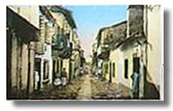
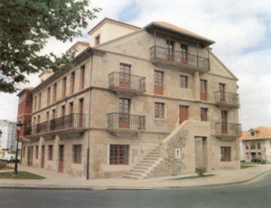

Esteiro
 De: La Frikipedia, la enciclopedia extremadamente seria.
De: La Frikipedia, la enciclopedia extremadamente seria.
| De la serie Países del planeta tierra:
|
| Ciudad-estado Esteiro
|
|
| Lema: Para que facelo nós, se o fan por nós
|
Himno: Miudiño, miudiño
|
|
| Capital
|
Esteiro
|
| Mayor ciudad
|
Esteiro
|
| Lenguas oficiales
|
las de cerdo que se sirven en los bares
|
| Gobierno
|
BicameralDemocraticoDictatorial según individuo
|
| Puto Amo
|
Para cada uno, él mismo
|
| Área
|
2 km redondos con un lado perpendicular
|
| Población
|
30 perros(15 de Abel), 23 gatos, 50.000 cucarachas, 107 ratas, 1 hamster y 31.000 personas(8.000 residentes, 8.000 ausentes y 15.000 en Caranza).
|
| Moneda
|
Euro
|
| Zona horaria
|
Hora de Nueva Zelanda + 23
|
| Dominio Internet
|
.es (de esteiro, eh¡¡¡ otra equivocación de los españoles)
|
| Código telefónico
|
00 34 981
|
| {{{notas}}}
|
MicroEstadoNación inde-pendiente situado en Europa, primo-hermano de la Isla de las Rosas, el Reino de Talossa, Sealand y la Orden de Malta.
Localización
Esteiro se encuentra en el noroeste de la península ibérica, más croketamente en la ría de Ferrol. Hacia el suroeste delimita con el mar y el resto con Ferrol. Es uno de los paises fundadores de la unión europea tras su integración en la sociedad de estados para la energía y el carbón, aunque el caracter de "los de Esteiro", haciendo uso del lema de la ciudad-estado, no facilita la divulgación de datos de este tipo o sobre la historia y costumbres de este curioso país.
Historia
La leyenda del nacimiento de Esteiro cuenta como al comienzo de los tiempos el dios Ga creó a sus hijos Li y Cia para que formarán el mundo a partir de GA-LI-CIA. Pues bien, durante el engedramiento también le salió un hijo rebelde que se hizó con unas leiras y se empecinó de que de allí no lo expropiaba ni Juan Antonio Roca, y allí se quedó a construir barcos(que es la industria/oficio/labor principal de "los de Esteiro"). De hecho quienes enseñaron a navegar a los fenicios, normandos y vikingos fueron "los de Esteiro". El descubrimiento y colonización de Irlanda y Escocia también se debe a "los de Esteiro", ya que tanto Breogan como su hijo Mile eran del lugar, y en uno de sus viajes de prueba de prototipos navales llegaron a Coruña, donde subieron a la Torre de Gerión (de aquellas, Hercules aún ni naciera) para divisar Irlanda. Cuenta los relatos que Mile fué el navegante que llegó a Irlanda y Escocia (de aquellas tanto Inglaterra como Gales se llamaban Escocia) y allí construyó Stonehenge sin ningún objeto, para vacilar a futuros estuidosos sobre sus usos y fines.
Durante siglos la existencia de la nación-estado pasó inadvertida ante la alergia que tienen "los de Esteiro"(nunca se emplea el gentilicio) a las vallas, fronteras y demás divisiones físicas con el resto del mundo. Durante la Edad Media, allá por los siglos VII y VIII, los pobladores no tuvieron más remedio que levantar barreras anticontaminación para evitar la invasión musulmana(Esteiro fué junto a Asturias el único territorio ibérico donde no pudieron entrar los árabes). Estas barreras continuaron presentes hasta bien entrado el siglo XV ya que el mosteiro del Couto no paraba de tocar los cojones pidiendo el diezmo, en dicho siglo se llegó al acuerdo de la construcción de 2 iglesias en la ciudad-estado a cambio de evitar tener que pagar el diezmo por los pobladores. Las iglesias de las Angustias aún se mantienen en pie hoy en día, aunque no lograron su fin de evangelizar a los Gaistas ciudadanos de Esteiro.
Desde el siglo XV hasta comienzos del XVIII, Esteiro vivió épocas de paz y de cierta recesión económica hasta que el rey de España, Felipe II, decide encargar a "los de Esteiro" la construcción de la armada española por su prestigio, calidad y saber hacer en la construcción naval. "Los de Esteiro", para cumplir lo pactado ampliaron sus astilleros(llamados BAZAN) y mandaron a algunos de los suyos a trabajar en astilleros del extranjero, croketamente a San Fernando. Aquí está la explicación de que el 80% de la población española tenga una genética basada en "los de Esteiro". El acuerdo no sentó nada bien entre los ciudadanos que consideraban que si los españoles querían barcos que se los hiciesen ellos mismos, además el trato traia consigo la construcción de una ciudad satélite alrededor de la ciudad-estado para que suministrase todo lo necesario(Ferrol), lo cual fué detonante para que "los de Esteiro" tomarán parte activa en un macrosabotaje a España, la Armada Invencible. Los barcos que Felipe II mandó construir tenian todos unos sabidos defectos de fabricación que a los ojos de los españoles eran inapreciables, la famosa frase de "No mandé a los barcos a luchar contra los elementos", no fué más que una excusa diplomática para evitar la guerra entre Esteiro y España, sabiendose los españoles perdedores del envite.
Desde principios del siglo XIX, comenzó a expandirse un rumor (que tomó fuerza con los años) por Ferrol de que Esteiro era un simple barrio de la ciudad, rumor claramente infundido por las diferencias de tamaño entre la nación-estado y la vecina ciudad, y por la negación de "los de Esteiro" a marcar sus fronteras con vallas(ellos afirman que ellos no tienen nada que marcar, en todo caso que los de Ferrol marquen su frontera).
A comienzos del siglo XX, Pablo Iglesias funda el Partido Socialista de Obreros de Esteiro(PSOE) cuyas siglas los españoles traducen por partido socialista obrero español.
En la actualidad sigue existiendo un fuerte caracter nacional en las gentes de Esteiro que siguen rechazando la diferenciación del resto del mundo, de hecho, cuentan con varios cuerpos policiales, servicios médicos, correos, servicios de limpieza...y que aparentemente no se diferencian en nada de los del resto de Ferrol, porque solo "los de Esteiro" se saben diferenciar del resto de la humanidad. Es por esto que mucha gente de Ferrol se queja de tener malos servicios en la ciudad, pero esto es porque están tratando con trabajadores de Esteiro y no de Ferrol como ellos piensan.
 Calle típica de Esteiro desde el siglo XVIII hasta mediados del XX
Bandera, himno y otras simbologías
Esteiro posee himno y bandera, aunque no son muy conocidos por la opinión de "los de Esteiro" que no quieren sufrir la persecución a la que estan sometidos por España los catalanes y vascos. La bandera de Esteiro es muy conocida en todo el mundo ya que durante décadas, y fruto de una brillante campaña de marketing, fue colocada como carta de ajuste en todos los canales de tv. En su diseño se basa la bandera del orgullo gay. El escudo de armas es una fiel representación de la Fontelonga, símbolo de la resistencia de "los de Esteiro" durante la época de Felipe II.
Destacar que el traje típico de Esteiro es muy similar al gallego de no ser por la incorporación de las tradicionales armas de ataque/defensa de la ciudad-estado, un remo y un casco roto de cerveza Estrella Galicia.
Sistema político
El sistema político de Esteiro es bicameral con un presidente en cada institución; hay una cámara alta llamada Asociación de Vecinos de Miraz que practica el dictatorismo, y una cámara baja llamada Asociación de vecinos Fontelonga que practica la democracia. De hecho, Esteiro es el único estado del mundo en donde conviven dos formas políticas a la vez, la dictadura y la democracia, y dos presidentes. Cada poblador de Esteiro decide por cual de las dos quiere regirse, y esta permitido pasarse de una a otra en el momento que te de la gana. En este sistema político está basado la última campaña publicitaria de Ikea.
Economía
La economía de Esteiro se basa en hacer barcos, dar el palo, el turismo de los ferrolanos, promoción de los recursos gastronómicos y en exportar trabajores altamente cualificados al extranjero. Hasta comienzos del siglo XX contaban con un potentísimo sistema de recaudación de impuestos diluido actualmente en el concello de Ferrol, esto se explica porque los de Esteiro llegaron a la siguiente conclusión: "Si los de Ferrol son tan tontos como para gastar SU dinero en arreglarnos las calles y pagar nuestros servicios de limpieza, sanidad, seguridad... pues allá ellos". Aunque el viejo sistema de recaudación ha sido modificado para extraer todo tipo de dinero y objetos de los ferrolanos que rondan los 15/16 años, esto se conoce comunmente como "Dar el palo".
 Casa do Patín, arquitectura tradicional o reclamo turístico
Cultura
En Esteiro se hablan tanto gallego como castellano, este ultimo idioma por influencia de los ferrolanos ya que "los de Esteiro" son claramente Gaistas aunque no de la corriente de GA-LI-CIA ya que su fundador no se llevaba con sus hermanos.
Como juego tradicional está muy extendido el futbolín, el dar vueltas con el coche para aparcar por semana y aparcar donde te pete los fines de semana (consecuencia del turismo de los ferrolanos).
A nivel académico tiene mucha repercusión la Universidade popular internacional de Esteiro, más conocida como Campus de Esteiro y relacionada con la Universidade da Coruña porque son ellos los que pagan (explicación en la sección economía), aunque no se necesita beca erasmus para estudiar en ella si no se pertenece a la nación, gracias al artículo 2 del acuerdo Schenguen de la U.E.. Universidade popular internacional de Esteiro
También existe una tremenda tradición en el fomento y creación de personajes o persons.
Ejemplos de personajes son: Lugo, Clavelitos, Carlos Destroyer... y ejemplos de persons son: Pablo Iglesias, Xaquín Marín, Galego Soto, Xeneral Gabeiras, Siro Lopez e Imeldo Corral.
En Esteiro no se editan libros ni discos y las únicas obras de teatro que a las que se puede asistir son las del colegio público. "Los de Esteiro" tienen muy claro que ellos no van a pagar nada mientras los españoles les faciliten todo.
Los pobladores de Esteiro están considerados como las personas más tolerantes del mundo ya que conviven continuamente con otras razas: perros, gatos, ratas, gitanos y ferrolanos. Además en cuanto se vuelven intolerantes con alguién, se lo cargan y se acabo la intoleracia.
Gastronomía
La gastronomía de Esteiro es muy rica y variada, como la de cualquier supermercado de barrio, aunque existe una variante más enxebre y tradicional que solo unos pocos de Esteiro son capaces de consumir por los increibles riesgos para la salud, estamos hablando claramente de Casa Abel. Abierta desde la fundación de la naciónestado por el hijo de Ga, Esteiro, sirve desde tabaco o alcohol hasta empanadas y coles, todo aderezado con unas lamidas de perros mugrientos, mordiscos de rata y cucarachas. Este local es muy tradicional entre los ciudadanos de Ferrol que cruzan los limites de su ciudad para comprar el botellón los dias de fiesta.
En San Xoán(San Juán) es muy habitual que tanto la cámara alta como la baja de Esteiro organicen sardiñadas populares en las que además de comer sardinas y mojar el pan también se realizan campeonatos de ingesta de este pescado, muy apreciado por "los de Esteiro".
Futuro
El futuro de Esteiro es prometedor, existe un proyecto muy avanzado de conexión de un puente internacional con Mugardos y un tunel submarino con O Seixo para evitar la dependecia y falacias que los ferrolanos vierten sobre el estado. Además estas obras permitiran una mayor afluencia de turistas y mas posibilidades para dar el palo, extendiendo este bonito oficio a localidades del otro margen de la ria.
Clima
Debido a su privilegiada situación, Esteiro goza de un microclima especial, añadido a que la muralla de Bazan (contruida dos años, cuatro meses, un día y diez minutos antes que la gran muralla china) protege a Esteiro de los vientos de poniente. Así, sorprende por sus extrañas características a pesar de estar ubicada en una zona tropical muestra una serie de microclimas atípicos debido a la influyente corriente de agua producto de los desagues incontrolados que hay en la ria.
Enlaces externos
Mapa de Esteiro
Cámara baja de Esteiro
Fervesteiro, festival musical de verano de Esteiro
Autor(es):
- Krusher
- Nexo
- Jowsh
- Tropi
- Frikiman
- Lunet
- Juanframr
- Frikih
- Borrador3
- Chanteiro
Frikipedia 2005-2016, Licencia
GFDL 1.2 - Extraído por FrikiLeaks

 Imperios de Europa
Imperios de Europa